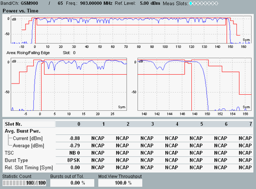

The power vs. time results are displayed in one or more diagrams and as a table of statistical results.

The upper diagram covers a time interval of up to 8 timeslots (1 complete TDMA frame, corresponding to 1260 symbol periods or 4.615 ms). The burst power is displayed with an oversampling factor of 16 (16 samples per symbol period) and normalized to the average burst power in the "measurement slot" (0-dB reference). According to the conformance test specification 3GPP TS 51.010-1, the average burst power is defined as the average power of the samples over the 147 useful symbols in each burst.
Using the softkey-hotkey combination "Display > Display Areas" you can activate and configure the lower diagram, showing only a specific part of one selected slot/burst: either the useful part of the burst or the rising and falling edges of the burst or the upper part of the rising and falling edges.
If the lower diagram is hidden, an additional bar is shown below the remaining upper diagram:
The vertical blue lines in this bar mark the area borders of the time mask (vertical red lines in the diagram). The upper half corresponds to upper limit lines, the lower half to lower limit lines. When a limit is exceeded, the corresponding area in the bar is marked red. So the bar visualizes, in which areas the limits are currently exceeded and whether the power is too high or too low.
- Burst power: Average burst power, evaluated over the useful part of the burst (see 3GPP TS 51.010-1).
- TSC: Detected burst type (normal burst NB, access burst AB, inactive slot OFF, dummy burst) and for access bursts and normal bursts also the detected training sequence code (TSC).
- Burst type: Burst type detected in the measured slot (GMSK/8PSK/16-QAM modulated normal burst, access burst, inactive slot).
- Relative slot timing: Slot timing relative to the timing of the "measurement slot". It is the deviation of the measured relative timing from the nominal timing, which is based on a timeslot length of 156.25 symbol durations.
For additional screen elements, refer to "Common View Elements".